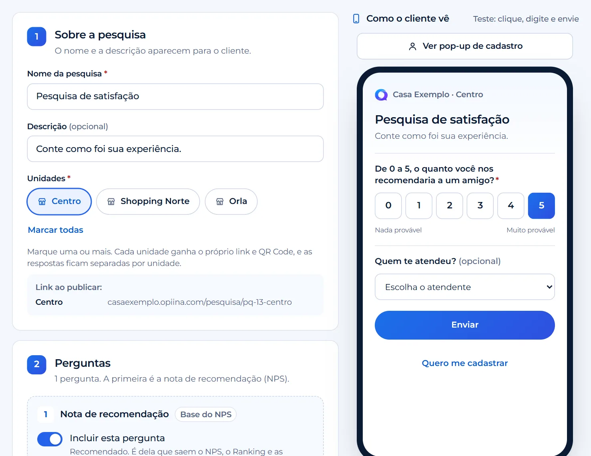
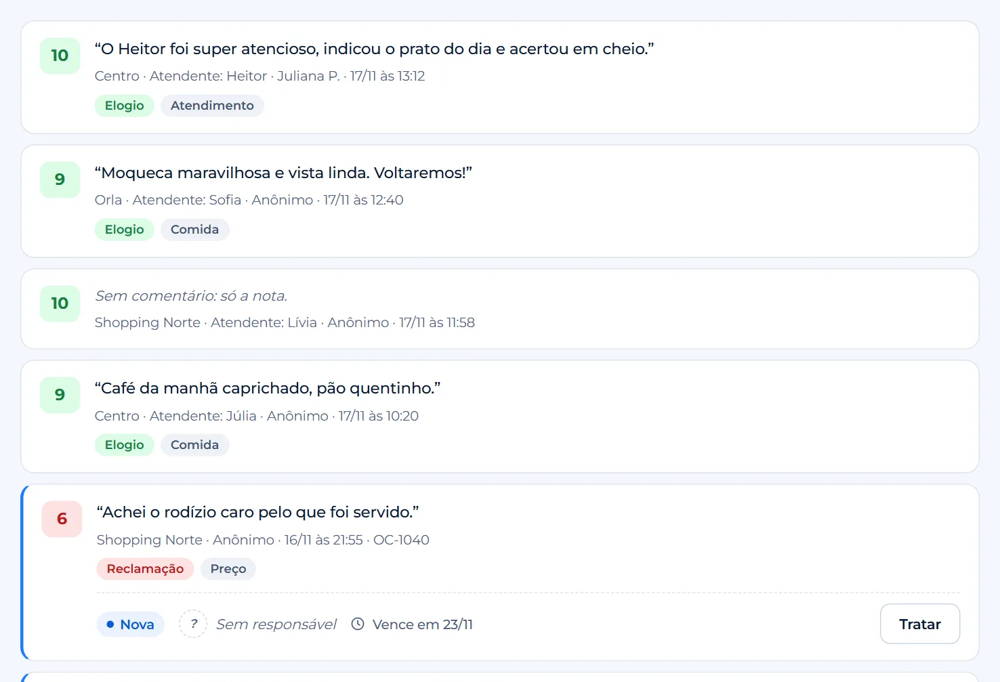
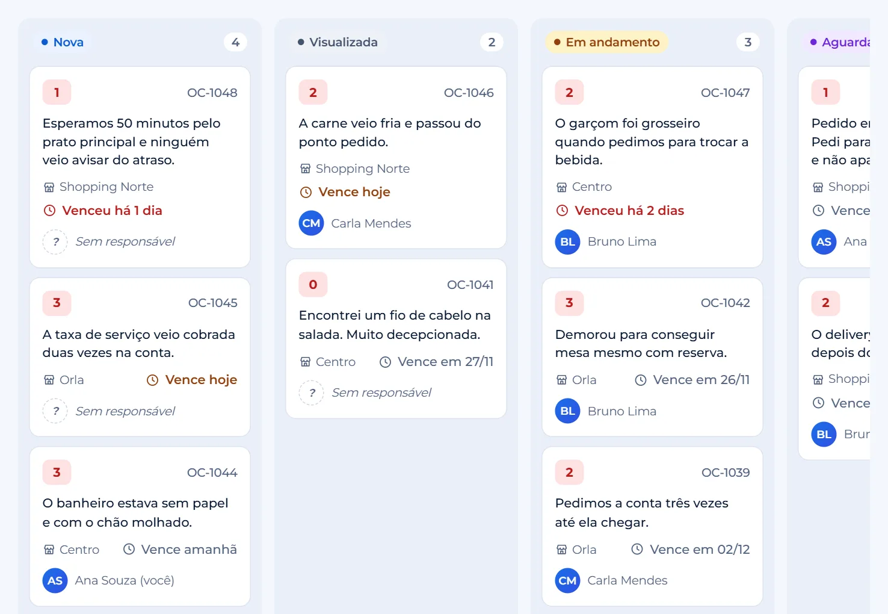
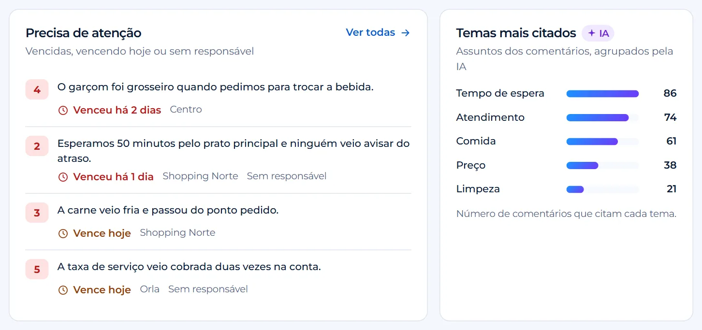
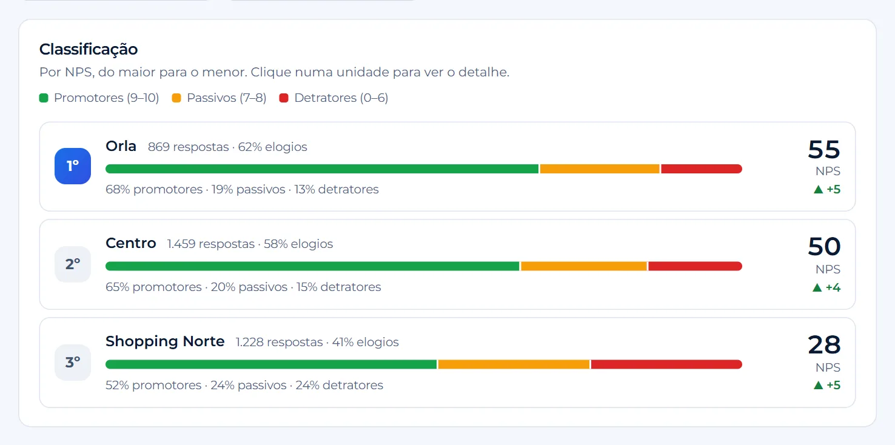
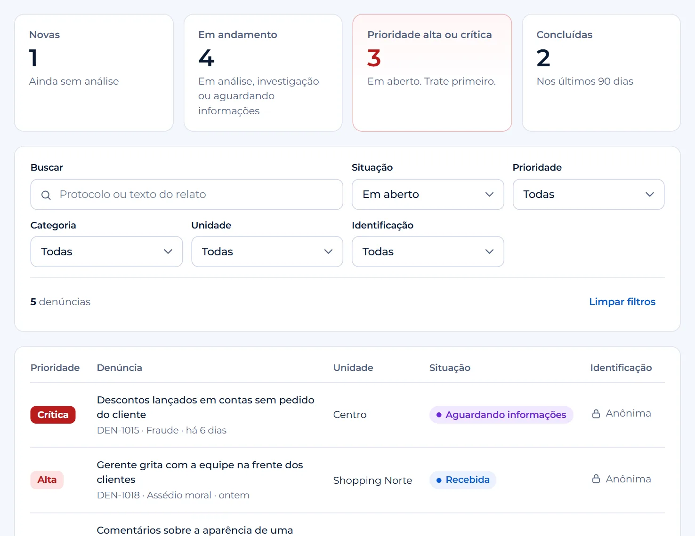

Unidade
- Quem pergunta o NPS e não sabe o que fazer com a resposta
- Quem mistura reclamação no WhatsApp, caderno e planilha
- Quem opera uma casa só e quer o básico bem feito
Ouça · Entenda · Fidelize
Pesquisa NPS e gestão de ocorrências para restaurantes e redes: capture a nota, abra a ocorrência e acompanhe o atendimento num fluxo simples.
Sem planilha, sem conversa perdida. · Ver como funciona · Falar no WhatsApp
Imprima o QR Code na mesa ou mande o link por mensagem. O cliente dá uma nota de 0 a 5, deixa um comentário — e a resposta volta pro painel. Veja o Opiina funcionando:
Telas do painel do Opiina com dados de exemplo.
Nota, comentário e ocorrência no mesmo lugar.
Cada unidade tem o próprio link e QR Code. O cliente responde pelo celular, sem baixar aplicativo, e a resposta volta direto pro painel.

A nota e o comentário chegam juntos. Você enxerga onde a casa está ganhando ou perdendo.

Cada reclamação vira um cartão no quadro (o Kanban), com responsável e prazo. A equipe trata, você acompanha.

Comentários abertos viram temas — demora, atendimento, comida, elogio. Você vê o que mais aparece e onde agir primeiro.

Compare nota, volume de respostas e desempenho entre casas — sem montar planilha no fim do mês.

Cada unidade tem um link só pra isso, fora do NPS. Canal alinhado às obrigações trabalhistas.

Telas do painel do Opiina com dados de exemplo.
Imprima o QR Code na mesa ou mande o link por mensagem. O cliente responde pelo celular, sem baixar aplicativo.
A nota e o comentário chegam no mesmo lugar. Você enxerga onde a casa está ganhando ou perdendo.
Cada reclamação vira um cartão com responsável e prazo. A equipe trata e você acompanha até resolver.
Cada unidade tem um link só pra isso, separado da pesquisa de clientes. A equipe relata o que acontece no trabalho, e a gestão acompanha cada caso no painel. Canal alinhado às obrigações trabalhistas.
16 categorias, entre elas:
Quem relata escolhe se quer se identificar.
Fácil de divulgar no mural, no vestiário ou no grupo da equipe.
Cada denúncia ganha um número próprio e fica registrada.
Situação e prioridade em cada caso: recebida, em análise, em investigação, aguardando informações, concluída.
Restaurantes, redes e um open mall que usam o Opiina.
 Cabaña del Primo
Cabaña del Primo Jardins Open Mall
Jardins Open Mall Carneiro do OrdonesJóquei
Carneiro do OrdonesJóquei Carneiro do OrdonesJovita
Carneiro do OrdonesJovita Carneiro do OrdonesVarjota
Carneiro do OrdonesVarjotaAntes, a gente só sabia da reclamação quando ela já estava no Google. Hoje o cliente responde pelo QR Code na mesa e o comentário chega no painel pra equipe resolver.
Com três casas, era difícil saber qual estava indo bem. No Opiina eu vejo as unidades lado a lado e sei onde preciso agir primeiro.
Carneiro do OrdonesGestão das unidades
Reclamação ficava perdida no WhatsApp. Agora cada uma vira um card, alguém fica responsável e eu acompanho até resolver.
A gente achava que sabia o que o cliente pensava. Com a pesquisa no QR Code, a resposta chega com nota e comentário, e fica fácil ver o que precisa melhorar.
Cabaña del PrimoGerência
Em dia cheio, ninguém tinha tempo de anotar reclamação. Agora ela chega no painel e a equipe já sabe quem vai cuidar.
Ter a opinião de quem passa pelo mall num só lugar ajuda a gente a cuidar melhor da experiência de cada visita.
Jardins Open MallAdministração
Todos os planos têm todas as funções. Muda só quantas unidades e quantos usuários você precisa.
Em todos os planos
Para uma casa.
R$ 147,00/mês
Para quem tem até 3 casas.
R$ 297,00/mês
Para a rede toda, sem limite.
R$ 697,00/mês
Não sabe qual plano escolher? Fale com a gente no WhatsApp
Mostra o que o cliente achou da visita (a nota e o comentário) e organiza o que precisa ser resolvido num quadro de tarefas, com responsável e prazo.
É uma nota que mostra o quanto o cliente recomendaria a sua casa. No Opiina a pergunta vai de 0 a 5: quem dá 5 é promotor, 4 é neutro e de 0 a 3 é detrator. O NPS é a porcentagem de promotores menos a de detratores.
Cada unidade tem o próprio link e QR Code. Imprima o QR Code para a mesa ou o balcão, ou mande o link por mensagem. O cliente responde pelo celular, sem baixar aplicativo, e a resposta cai direto no painel.
Não. O painel abre no navegador, no endereço da sua empresa (sua-marca.opiina.com), no computador ou no celular.
Você escolhe o plano, cria a conta e paga pela Stripe, numa página segura de pagamento. Depois de pago, é só entrar no painel.
Sim. Você pode cancelar em até 7 dias depois de contratar o plano.
Os dois. O Start é para 1 unidade, o Pro para até 3 e o Redes não tem limite de unidades nem de usuários. Todos têm as mesmas funções.
Não. O fluxo é o de sempre: pergunta, vê a nota, trata a reclamação. E o painel tem uma central de ajuda com tutoriais passo a passo.
Ficou com alguma dúvida? Fale com a gente no WhatsApp
Indique o Opiina às empresas que você atende, do nicho que for, e receba uma comissão por cada cliente que assinar.
Planos a partir de R$ 147,00 por mês — para uma unidade ou para a rede toda.